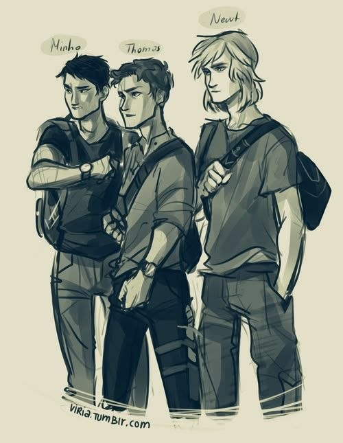
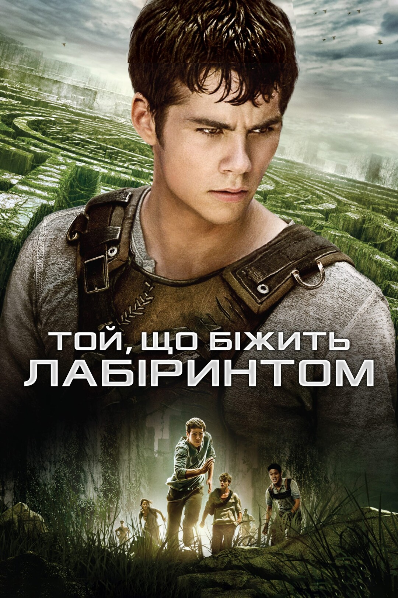

«Той, що біжить лабіринтом» — це антиутопічна серія книг про підлітків, які змушені виживати в умовах постапокаліпсису. Головний герой, Томас, — останній шанс людства на виживання; він — ключ до всього, навіть якщо на початку історії герої про це ще не знають.
Найсильніша сторона цієї історії для мене — це відчуття єдності серед глейдерів. Те, як вони намагаються зберегти людяність у світі, що буквально розвалюється на частини, викликає щире захоплення. За книгами також зняті фільми, однак лише перша частина схожа на книгу, а друга та третя йдуть своєю дорогою. Особисто мені сподобалися обидві версії історії: і з книг, і з фільмів.
Я обожнюю більшість головних героїв, їхній шлях та розвиток у творі — особливо незламну вірність Ньюта та сміливість Мінхо. Кожен із них займає окреме місце в моєму серці. Я рекомендую цю серію кожному, бо для мене вона є прекрасним представником жанру антиутопії. Це історія про дружбу, любов та виживання, і я ні на секунду не пошкодувала, що наважилася прочитати її.

